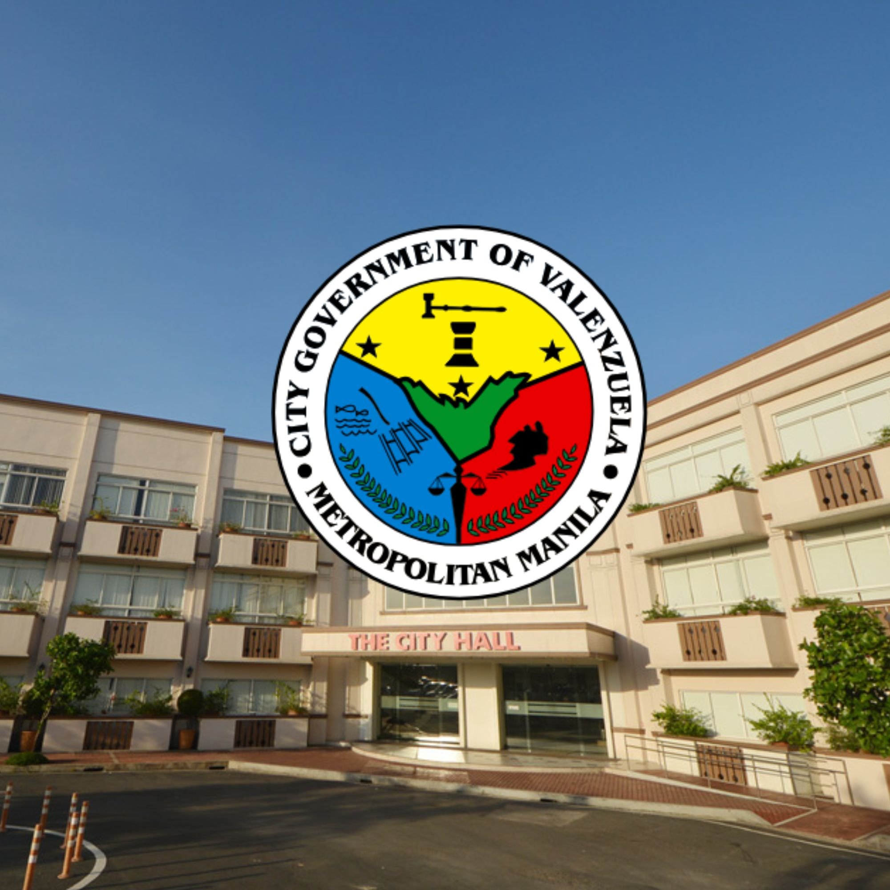

WHERE I LIVE?
Valenzuela City is often called the "Vibrant City," and for good reason. It manages to balance the industrial energy of the National Capital Region (NCR) with a deep respect for its historical roots and a modern commitment to green, livable spaces.
- The "Vibrant City" Spirit: Known for its discipline and award-winning local governance, the city feels organized and progressive, making it one of the most livable urban centers in the northern part of Metro Manila.
- Green Havens in the Urban Jungle: The Valenzuela City People's Park and the Family Park provide stunning, sprawling green spaces where residents can breathe, exercise, and enjoy nature—a rare luxury in the dense landscape of NCR.
- A Blend of History and Modernity: From the historic San Diego de Alcala Church to the high-tech Valenzuela City Library Hub, the city perfectly bridges its Spanish-colonial past with a future-ready, digital-first mindset.
- The Polo Heritage: The "Polo" district preserves the old-world charm of the city, offering a glimpse into the traditional Filipino lifestyle through its ancestral houses and the famous Casa de Polo.
- Culinary Delights: Beyond the factories, it is a food destination featuring everything from the iconic Putong Polo to the bustling food parks and hidden-gem cafes that cater to the younger, "foodie" generation.
- Resilience and Light: During the holidays, the city transforms into a literal "City of Lights," with grand displays and a festive atmosphere that showcases the warmth and hospitality of the Valenzuelanos.
